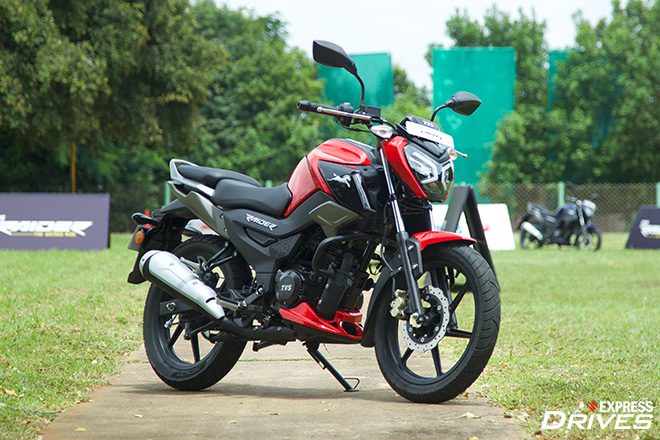
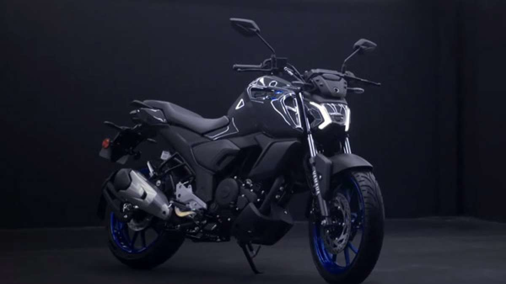
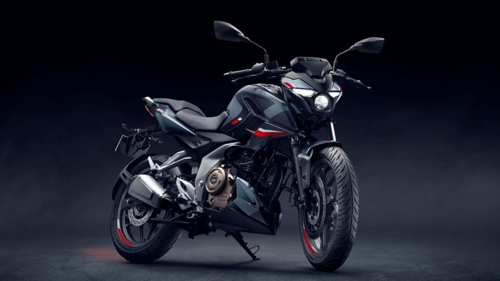
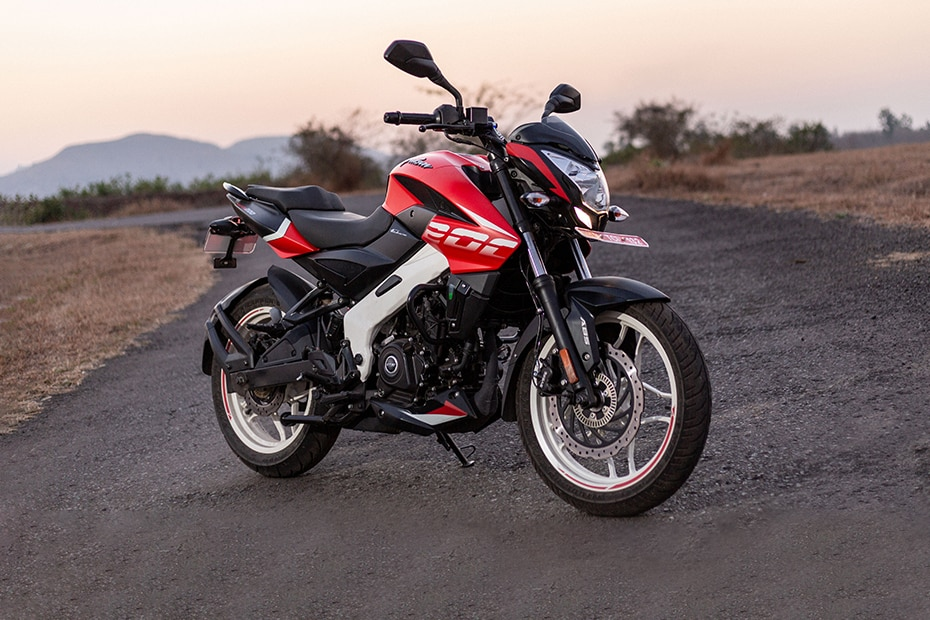
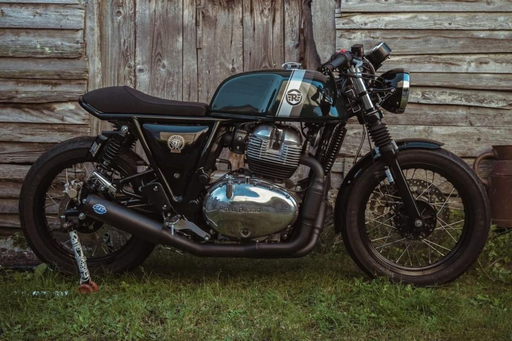

TVS Raider 125 is a bike available at a starting price of Rs. 91,356 in India.
It is available in 4 variants and 7 colours with top variant price starting from Rs.1,04,645.
The TVS Raider 125 is powered by 124.8cc BS6 engine which develops a power of 11.2 bhp and a torque of 11.2 Nm.
With both front and rear drum brakes, TVS Raider 125 comes up with combined braking system of both wheels.
This Raider 125 bike weighs 123 kg and has a fuel tank capacity of 10 liters.
Link to Buy TVS Raider 125

Yamaha FZS Fi V4 is a street bike available at a starting price of Rs.1,28,482 in India.
It is available in only 1 variant and 3 colours.
The Yamaha FZS Fi V4 is powered by 149cc BS6 engine which develops a power of 12.2 bhp and a torque of 13.3 Nm.
With both front and rear disc brakes, Yamaha FZS Fi V4 comes up with anti-locking braking system.
This FZS Fi V4 bike weighs 136 kg and has a fuel tank capacity of 13 liters.
Link to Buy FZ FI V4

Bajaj Pulsar N160 is a street bike available at a starting price of Rs. 1,23,007 in India.
It is available in 2 variants and 4 colours with top variant price starting from Rs. 1,29,337.
The Bajaj Pulsar N160 is powered by 164.82cc BS6 engine which develops a power of 15.68 bhp and a torque of 14.65 Nm.
With both front and rear disc brakes, Bajaj Pulsar N160 comes up with anti-locking braking system.
This Pulsar N160 bike weighs 152 kg and has a fuel tank capacity of 14 liters.
Link to Buy Pulsar N160

Bajaj Pulsar NS200 is a street bike available at a starting price of Rs. 1,42,051 in India.
It is available in 2 variants and 6 colours with top variant price starting from Rs. 1,48,678.
The Bajaj Pulsar NS200 is powered by 199.5cc BS6 engine which develops a power of 24.13 bhp and a torque of 18.74 Nm.
With both front and rear disc brakes, Bajaj Pulsar NS200 comes up with anti-locking braking system.
This Pulsar NS200 bike weighs 159.5 kg and has a fuel tank capacity of 12 liters.
Link to Buy Pulsar NS200

Royal Enfield Continental GT 650 is a cafe racer bike available at a starting price of Rs. 3,18,793 in India.
It is available in 4 variants and 7 colours with top variant price starting from Rs. 3,44,765.
The Royal Enfield Continental GT 650 is powered by 648cc BS6 engine which develops a power of 47 bhp and a torque of 52 Nm.
With both front and rear disc brakes, Royal Enfield Continental GT 650 comes up with anti-locking braking system.
This Continental GT 650 bike weighs 211 kg and has a fuel tank capacity of 12.5 liters.
Link to RE Continental GT650
| Sr.No | Name | Buy link | Price |
|---|---|---|---|
| 1 | Hayabusa | https://www.bikewale.com/suzuki-bikes/hayabusa/ | 16L |
| 2 | Kawasaki Z900 | https://www.bikewale.com/kawasaki-bikes/z900/ | 9L |
| 3 | BMW M 1000 RR | https://www.bikewale.com/bmw-bikes/m-1000-rr/ | 42L |
| 4 | Kawasaki Ninja H2R | https://www.bikewale.com/kawasaki-bikes/ninja-h2r/ | 80L |
| 5 | Ducati Panigale V4 | https://www.bikewale.com/ducati-bikes/panigale-v4/ | 27.5L |
| 6 | Harley-Davidson Sportster S | https://www.bikewale.com/harleydavidson-bikes/sportster-s/ | 18.9L |